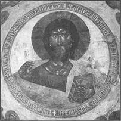
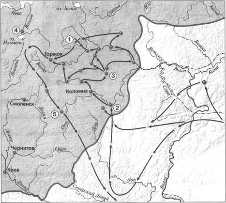
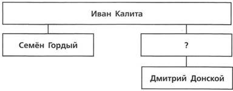
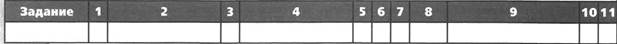
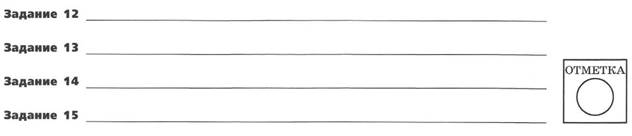
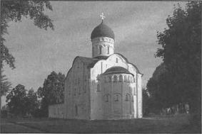
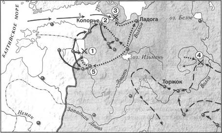
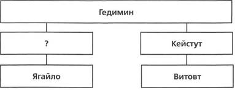
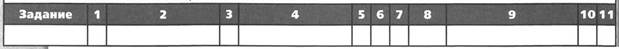
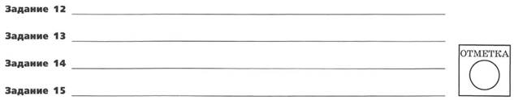

ПРОВЕРОЧНАЯ РАБОТА №1
ВАРИАНТ 1
1. Укажите название представителя монгольского хана в завоёванных землях, контролировавшего местные власти.
1) темник
2) смерд
3) баскак
4) нойон
2. Установите соответствие между событиями и годами.
СОБЫТИЯ
1) восстание в Твери против ордынцев
2) начало завоевательных походов Чингисхана
3) разорение Москвы ханом Тохтамышем
ГОДЫ
A) 1211 г.
Б) 1327 г.
B) 1380 г.
Г) 1382 г.
Запишите буквы, соответствующие выбранным ответам.
3. Прочитайте отрывок из литературного произведения и укажите участника сражения, о котором идёт речь.
И вот наступил восьмой час дня, когда ветер южный потянул из-за спины нам, и воскликнул Волынец голосом громким: «Княже Владимир, наше время настало, и час удобный пришёл!» — и прибавил: «Братья моя, друзья, смелее: сила Святого Духа помогает нам!»
Соратники же друзья выскочили из дубравы зелёной, словно соколы испытанные сорвались с золотых колодок, бросились на бескрайние стада откормленные, на ту великую силу вражескую...
1) Ольгерд
2) Иван Калита
3) Дмитрий Донской
4) хан Батый
4. Установите соответствие между событиями (процессами) и участниками этих событий (процессов).
СОБЫТИЯ (ПРОЦЕССЫ)
1) Грюнвальдская битва
2) противостояние войску Батыя в период его нашествия на русские земли
3) основание города Вильно
УЧАСТНИКИ
A) Филипп Нянька
Б) Витовт
B) Александр Пересвет
Г) Гедимин
5. Что из перечисленного стало одним из последствий нашествия Батыя на Русь?
1) начало распада Руси на самостоятельные земли
2) необходимость выплачивать ордынский выход
3) насаждение ордынцами язычества на Руси
4) перенесение столицы Северо-Восточной Руси из Суздаля во Владимир
6. В каком из перечисленных произведений сказано о подвиге Евпатия Коловрата?
1) «Житие Александра Невского»
2) «Повесть о разорении Рязани Батыем»
3) песня «О Щелкане Дудентьевиче»
4) песня «Об Авдотье Рязаночке»
7. Рассмотрите изображение и укажите, какое суждение о данной фреске является верным.

1) На изображении представлена роспись купола одного из храмов города Владимира.
2) Представленная на изображении фреска был создана перед нашествием Батыя на Русь.
3) Автор фрески, представленной на изображении, приехал на Русь из Византии.
4) На фреске отсутствуют надписи.
8. Какие из перечисленных государств подверглись монгольскому завоеванию до начала Батыева нашествия на Русь?
1) империя Цзинь
2) королевство Польша
3) Волжская Булгария
4) королевство Чехия
5) королевство Венгрия
Выберите несколько правильных ответов.
9. Прочитайте текст (каждое предложение пронумеровано), в котором нарушена последовательность предложений.
(1) Рыцарская конница скучилась, так как задние шеренги рыцарей подталкивали передние шеренги, которым негде было развернуться для боя. (2) И в самый её разгар, когда «свинья» полностью втянулась в бой, по сигналу Александра Невского по её флангам во всю мощь ударили полки левой и правой руки. (3) Атака оказалась успешной, рыцари прорвали оборонительные порядки русского «чела». (4) Однако, наткнувшись на обрывистый берег озера, малоподвижные, закованные в латы рыцари не могли развить свой успех. (5) Немецкие рыцари построили свои войска в форме клина («свиньи»). (6) В этой тесноте завязалась ожесточённая рукопашная схватка. (7) Выставив длинные копья, немцы атаковали центр («чело») боевого порядка русского войска.
Запишите правильную последовательность предложений.
Рассмотрите карту «Нашествие Батыя на Русь» и выполните задания 10-12.

10. Укажите год(ы), к которому(ым) относятся события, обозначенные на схеме стрелками.
1) 1223 г.
2) 1236-1238 гг.
3) 1239-1242 гг.
4) 1257-1259 гг.
11. Укажите цифру, которой обозначен город, названный противниками Руси «злым городом».
12. Укажите название реки, на которой произошла битва, обозначенная на схеме цифрой «1».
Ответ:
13. Запишите термин, о котором идёт речь.
Грамота, письменный указ хана Золотой Орды.
Ответ:
14. Прочитайте отрывок из сочинения историка и впишите пропущенное имя.
____ недаром жил в Орде: он не только оправдался в обвинениях Михайловых, но умел сблизиться с семейством хана и женился на сестре его Кончаке. Ханский зять возвратился в Россию... и начал войну с Михаилом. Последний разбил его в 40 верстах от Твери, в селе Бортеневе, взял в плен его жену, брата Бориса, многих князей и бояр... Жена умерла в Твери в плену: пронёсся слух, что её отравили.
15. Укажите князя, пропущенного в схеме.

Ответ:
ЗАПОЛНИТЕ ТАБЛИЦУ ОТВЕТОВ


ВАРИАНТ 2
1. Кто является родоначальником московских князей?
1) Семён Гордый
3) Дмитрий Донской
2) Иван Калита
4) Даниил Александрович
2. Установите соответствие между событиями и годами.
СОБЫТИЯ
1) начало княжения в Москве Ивана Калиты
2) взятие Киева войском хана Батыя
3) Грюнвальдская битва
ГОДЫ
A) 1240 г.
Б) 1325 г.
B) 1389 г.
Г) 1410 г.
Запишите буквы, соответствующие выбранным ответам.
3. Прочитайте отрывок из литературного произведения и укажите князя, о котором идёт речь.
И вот какой обычай был у хана Батыя: когда приедет кто-нибудь на поклон к ним, то не велели сразу приводить такого к себе, но приказано было волхвам, чтобы шёл он сначала через огонь и поклонился кусту и идолам. А из всех даров, которые привозили с собой для царя, часть брали волхвы и бросали сначала в огонь, а уже потом к царю допускали и самих пришедших, и дары...
Один из вельмож Батыя, приехав к князю, сказал ему: «Так говорит царь: «Как посмел повелением моим пренебречь — почему богам моим не поклонился? Теперь одно из двух выбирай: или богам моим поклонишься и тогда останешься жив и получишь княжение, или же, если не поклонишься богам моим, то злой смертью умрёшь». Тогда ответил князь: «Тебе, царь, кланяюсь, потому что Бог поручил тебе царствовать на этом свете. А тому, чему велишь поклониться, — не поклонюсь».
1) Александр Невский
3) Михаил Черниговский
2) Ярослав Всеволодович
4) Юрий Всеволодович
4. Установите соответствие между событиями и участниками этих событий.
СОБЫТИЯ
1) антиордынское восстание в Твери
2) оборона Владимира во время Батыева нашествия
3) Куликовская битва
УЧАСТНИКИ
A) Пётр Ослядюкович
Б) Владимир Андреевич
B) воевода Дмитр
Г) Александр Михайлович
5. Что из перечисленного явилось одним из итогов победы русского войска на Куликовом поле в 1380 г.?
1) усиление позиций Москвы как центра объединения русских земель
2) перенесение резиденции митрополита из Владимира в Москву
3) освобождение русских земель от ордынского владычества
4) получение московским князем права сбора дани в Орду со всех русских земель
6. Какое из перечисленных произведений посвящено антиордынскому восстанию в Твери?
1) «Житие Александра Невского»
2) «Слово о законе и благодати»
3) песня «О Щелкане Дудентьевиче»
4) «Житие Михаила Тверского»
7. Рассмотрите изображение и укажите, какое суждение о данном памятнике архитектуры является верным.

1) Данный памятник архитектуры находится во Владимире.
2) Данный памятник архитектуры создан в XIII в.
3) На фасадах здания отсутствуют декоративные элементы.
4) Данный памятник архитектуры создан в период ордынского владычества на Руси.
8. Какие из перечисленных городов в XIV в. вошли в состав Великого княжества Литовского?
1) Тула
2) Рязань
3) Чернигов
4) Тверь
5) Брянск
9. Прочитайте текст (каждое предложение пронумеровано), в котором нарушена последовательность предложений.
(1) Южнорусские князья собрались в Киев на совет и часть из них решила оказать помощь половцам, встретив врага на чужой земле, не на своей. (2) Изначально ход битвы разворачивался в сторону русских, но монголы нанесли главный удар по левому половецкому крылу. (3) Бегущая половецкая конница нарушила ряды русских дружинников, готовых к выступлению, которых тут же начали теснить монголы. (4) Битва, в которой русско-половецкое войско сразилось с монголами, началась 31 мая 1223 г. (5) Половецкий хан Котян Сутоевич обратился к своему зятю, галицкому князю Мстиславу Мстиславичу Удалому, и к другим русским князьям, прося у них помощи против нового грозного врага. (6) Кочевники, не выдержав мощного натиска, начали беспорядочно отступать. (7) В 1222 г. монгольское войско вторглось с Северного Кавказа в половецкие степи.
Запишите правильную последовательность предложений.
Рассмотрите карту «Борьба Руси с завоевателями» и выполните задания 10-12.

10. Укажите год, к которому относится часть похода, обозначенная на схеме пунктирными стрелками —> .
1) 1223 г.
2) 1238 г.
3) 1240 г.
4) 1242 г.
11. Какой цифрой обозначено место сражения, в котором противником русского войска были шведы?
12. Напишите название города, обозначенного на схеме цифрой «5».
Ответ:
13. Запишите термин, о котором идёт речь.
Объединение двух монархических государств под властью одного монарха.
Ответ:
14. Прочитайте отрывок из сочинения историка и впишите термин, дважды пропущенный в тексте.
Своё государство Чингисхан разделил на четыре части (которые назывались ____) между четырьмя сыновьями. В ____ его старшего сына Джучи вошли Западная Сибирь, Кипчакская степь и Хорезм. Джучи умер ещё при жизни отца. Его наследником был признан второй сын Бату, который возглавил общемонгольский поход на запад, в ходе которого были покорены Волжская Булгария, Половецкая степь, русские княжества и некоторые другие страны Восточной Европы.
Ответ:
15. Запишите имя, пропущенное в схеме.

Ответ:
ЗАПОЛНИТЕ ТАБЛИЦУ ОТВЕТОВ


ПРОВЕРОЧНАЯ РАБОТА №2
ВАРИАНТ 1
1. Приведите любые три факта, которые можно использовать для характеристики религиозных отношений в Золотой Орде.
2. Существует точка зрения, что возвышению Москвы способствовала мудрая политика московских князей. Приведите не менее двух аргументов в подтверждение данной точки зрения.
3. Прочитайте отрывок из сочинения историка и выполните задания.
В русской части Литвы уния и в особенности принятие католичества официальными лицами не могли обойтись без протеста: русские с той поры, как Ягайло стал королём ____, захотели иметь своего особого князя, что заставило их сгруппироваться сначала вокруг Андрея Ольгердовича, попытка которого захватить власть, однако, окончилась неудачей. Тем не менее в Литве неудовольствие против унии всё росло, чем и воспользовался сын Кейстута — Витовт. Заручившись союзниками, он вступил в борьбу с Ягайло, и тот в конце концов должен был уступить Литву Витовту и признать последнего князем литовским.
Впишите название государства, пропущенное в тексте.
Укажите обстоятельство, которым, по мнению автора, воспользовался Витовт в борьбе за титул великого князя литовского. Используя знания по истории, назовите битву, для победы в которой двоюродные братья, названные в отрывке, объединили свои силы.
Укажите одну причину добровольного перехода некоторых русских княжеств под власть Великого княжества Литовского. Укажите одно последствие этого перехода для развития культуры в Великом княжестве Литовском.
4. Сравните борьбу русских земель против монголов и борьбу против завоевателей с Запада (шведов и рыцарей-крестоносцев) в XIII в. по линиям сравнения, указанным в таблице. На основании сравнения сделайте вывод.
|
Линии сравнения |
Борьба против монголов в XIII в. |
Борьба против завоевателей с Запада в XIII в. |
|
Основные события |
||
|
Масштабы вторжения противника (русские княжества, земли, подвергшиеся вторжению, примерная численность противника) |
||
|
Военные приёмы, оружие, приспособления, используемые противником |
||
|
Результаты борьбы |
Вывод:
ВАРИАНТ 2
1. В чём проявлялась зависимость Руси от Золотой Орды? Укажите не менее трёх проявлений.
2. Существует точка зрения, что присоединение западных и юго-западных русских земель к Литве и создание сильного Литовско-Русского государства имели положительное значение для народов, проживавших на территории этого государства. Приведите не менее двух аргументов в подтверждение данной точки зрения.
3. Прочитайте отрывок из сочинения историка и выполните задания.
Монголы вступили в Новгородскую область: великая республика трепетала; но обширные леса и разлив рек остановили Батыя: губительная волна достигла Игнатиева креста, в ста верстах от Новгорода, потом отхлынула на юго-восток. На возвратном пути Батый был задержан семь недель у небольшого города ____, жители которого перебили 4 тысячи неприятелей; поэтому монголы назвали его злым городом. Наконец ____ был взят, жители истреблены, а малолетний князь Василий «утоплен в крови».
Укажите название города, дважды пропущенное в тексте.
В чём, по мнению автора, заключаются причины отказа монголов от похода на Новгород? Запишите ещё одну возможную причину, не указанную автором.
Какие причины привели к поражению Руси от врагов, борьба с которыми описана в данном отрывке? Укажите не менее двух причин.
4. Сравните положение Московского княжества в периоды княжений Ивана Калиты и Дмитрия Донского по линиям сравнения, указанным в таблице. На основании сравнения сделайте вывод.
|
Линии сравнения |
Период княжения Ивана Калиты |
Период княжения Дмитрия Донского |
|
Военные столкновения с Ордой (если были, назовите их) |
||
|
Примеры сотрудничества с Ордой |
||
|
Отношения с Русской православной церковью (приведите примеры) |
||
|
Результаты княжений с точки зрения усиления (ослабления) роли Москвы как центра объединения русских земель |
Вывод: